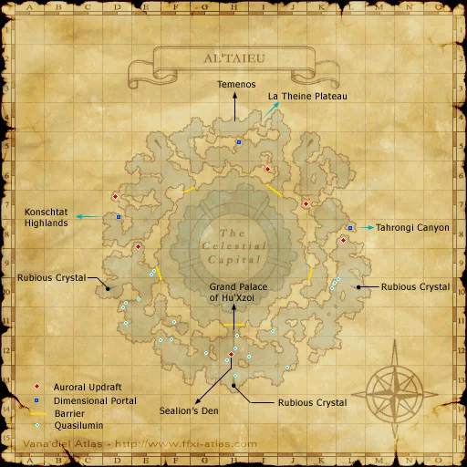

Before you begin
- Begin Chains of Promathia by entering Lower Delkfutt’s Tower, then follow the Upper Jeuno and Monberaux scenes.
- RoZ completion and national Rank 6 are not prerequisites for beginning CoP.
- Finish every CoP chapter and required branch through The Warrior’s Path. Check the item, travel and battlefield conditions on each mission page.
Route to Sea
| Stage | Goal | Guide |
|---|---|---|
| Chapter 1 | Complete the opening and all three Promyvions. | The Rites of Life |
| Chapters 2–4 | Travel through Tavnazia, both Roads Fork routes, Diabolos and the Ouryu story battle. | CoP mission order |
| Chapter 5 | Finish Promyvion-Vahzl and all three Three Paths branches. | Three Paths |
| Chapter 6 | Complete the story leading to the airship battle and defeat its consecutive enemies. | One to be Feared |
| Chapter 7 | Finish the preparation scenes, win against Tenzen and view the post-battle and arrival scenes. | The Warrior’s Path |
The final entry steps
- Finish the prerequisites for The Warrior’s Path and enter its battlefield from Sealion’s Den. Defeat Tenzen.
- After the victory, finish the post-battle scene in Sealion’s Den. Do not treat the win alone as the entire mission completion.
- Continue to Al’Taieu and watch its arrival scene. The reviewed mission completes The Warrior’s Path here and begins Garden of Antiquity (8-1).
- You now have access to Al’Taieu. Completing 8-1 is needed for the next stage inside the palace, not for your first entry to Sea.
Returning and continuing
After completing 7-5, Sueleen in Sealion’s Den provides the return route to Al’Taieu. Garden of Antiquity explains the next palace gates. Limbus has additional entry requirements and is not automatically entered or cleared by unlocking Sea.
People in this mission


Area maps
Open a zone below, then select a map to enlarge it. Match the named floors and grid coordinates in the steps; these are reference area maps, not a live position tracker.
Sealion's Den


Al'Taieu



Tavnazian Safehold